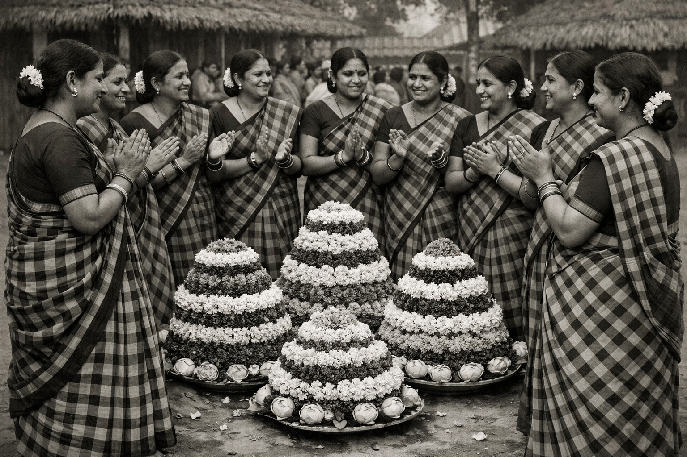

Bathukamma’s history stretches back centuries, rooted in the agrarian and spiritual traditions of the Telangana region. Its origins are often linked to ancient practices that honored the earth’s fertility and the cyclical rhythms of nature. Many historians believe the festival evolved from pre‑Vedic mother‑goddess worship, where communities revered feminine divinity as the source of life, protection, and prosperity. Over time, this reverence merged with local folklore, especially stories surrounding Goddess Gauri, who symbolizes strength, renewal, and abundance. One popular legend narrates that Gauri, after facing great trials, returned to life, and the people celebrated her rebirth with stacks of vibrant flowers—hence the name “Bathukamma,” meaning “Mother Goddess, live again.” These mythological layers gave the festival a sacred foundation, blending devotion with the celebration of life’s resilience. During the Kakatiya period (12th–14th centuries),Bathukamma gained further cultural prominence. The Kakatiyas, known for their patronage of arts, temple architecture, and regional identity, encouraged festivals that strengthened community participation and honored local deities. Bathukamma became a unifying celebration for women across social groups, reflecting the era’s emphasis on cultural expression and collective harmony. The use of seasonal wildflowers—especially those native to the Deccan plateau—also reflects the ecological knowledge of the time. These flowers were chosen not only for their beauty but for their medicinal and purifying properties, showing how traditional communities integrated environmental understanding into ritual practice. As Telangana’s villages grew around tanks and lakes constructed during this period, the immersion of Bathukamma in these water bodies symbolized gratitude for life‑sustaining resources and reinforced the connection between people and their environment. In more recent history, especially during the 20th and early 21st centuries, Bathukamma evolved into a powerful emblem of Telangana’s cultural identity. During the Telangana movement for statehood, the festival became a symbol of regional pride, unity, and self‑expression. Women played a central role in this cultural resurgence, using Bathukamma songs, gatherings, and public celebrations to assert the distinctiveness of Telangana’s traditions. After the formation of the state in 2014, Bathukamma was officially recognized as a state festival, further cementing its historical and emotional significance. Today, it stands not only as a religious observance but as a living heritage that reflects Telangana’s journey—from ancient agrarian societies to a modern state that honors its roots. The festival’s history continues to grow as communities across the world celebrate Bathukamma, carrying forward its message of life, resilience, and cultural pride.